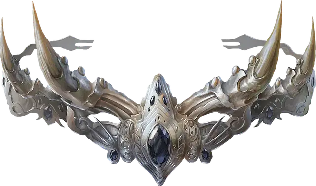

Корона рогов
Crown of Horns
Чудесный предмет, артефакт (требуется настройка)

Корона рогов содержит сущность и разум Миркула, одного из Мёртвой троицы. Эта ужасающая корона представляет собой бледно-серебряный обруч с четырьмя изогнутыми костями, расположенными по ободу. На челе короны закреплён чёрный алмаз, в глубинах которого клубится странная, зловещая энергия.
Миркул создал Корону рогов на пике своего могущества. Когда Миркул был убит Мистрой, он наполнил корону своей угасающей сущностью. С тех пор Миркул вернулся и вновь стал одним из Мёртвой троицы, а Корона рогов продолжает служить его ужасной воле, разыскивая смертных агентов и постепенно превращая их в могущественных неживых последователей. Если носитель оказывается недостоин этой чести, корона телепортируется прочь, чтобы найти нового смертного и совратить его во имя своего хозяина.
Проклятие. Корона проклята. Настройка на корону распространяет проклятие на вас. Только заклинание Желание или воля Миркула может снять это проклятие. Пока вы прокляты, к вам применяются следующие свойства:
Связь. Вы не желаете расставаться с короной, носите её всё время и не можете добровольно прекратить Настройку на корону.
Жестокость. Ваше мировоззрение теперь Нейтральное Злое.
Рок. В течение 365 дней вы медленно превращаетесь в чудовищного слугу Миркула. В это время превращение носит исключительно внешний характер; эти косметические изменения постепенно исчезают, если вы прекратите Настройку на корону до завершения превращения. Когда превращение завершается, вы становитесь Личем под контролем Мастера. Каждый раз, когда вы используете свойство Конус нежизни или Длань Миркула этого Артефакта, с накопительным 10% шансом вы мгновенно завершите это превращение.
Конус нежизни. Действием Магия вы можете извергнуть волну нечестивого света 60-футовым Конусе. Каждое существо в этом Конусе совершает спасбросок Телосложения Сл 18, получая 4к8 Некротического урона при провале или половину этого урона при успехе. Гуманоид, убитый Конусом нежизни, восстаёт в начале вашего следующего хода как Спектр, подчиняющийся вашим устным приказам.
Иммунитет к урону. Вы обладаете Иммунитетом к Некротическому урону.
Аура страха. Пока вы носите корону, вы источаете ауру ужасающей энергии 60-футовой Эманацией. Существо, впервые за ход входящее в эту область или начинающее в ней свой ход, должно преуспеть в спасброске Мудрости Сл 16, иначе оно получает состояние Испуганный. Испуганная цель в свои ходы должна использовать своё перемещение, чтобы удалиться от вас как можно дальше, двигаясь по безопаснейшему маршруту.
Если вы нанесёте урон Испуганной цели или если Испуганная цель закончит свой ход более в 120 футах от вас, цель может повторить спасбросок Мудрости, при успехе оканчивая на себе это состояние. Существо, преуспевшее в спасброске против этого эффекта, получает Иммунитет к нему на 1 минуту; по истечении этого времени этот эффект снова может воздействовать на него.
Аура неактивна, пока вы имеете состояние Недееспособный. Вы можете включать или отключать ауру Бонусным действием.
Длань Миркула. Пока вы носите корону, вы можете сотворить с её помощью заклинание Слово силы: смерть (Сл спасброска 18). Гуманоид, убитый этим заклинанием, восстаёт в начале вашего следующего хода как Призрак, подчиняющийся вашим устным приказам. Как только вы сотворили это заклинание с помощью короны, вы не можете сотворять его с помощью короны до следующего рассвета.
Телепортация. Пока вы носите корону, вы можете сотворить заклинание Телепортация. Корона также может сотворить это заклинание по собственной воле. После сотворения заклинания с помощью короны оно не может быть сотворено снова, пока не пройдёт 7 дней.
Случайные свойства. Артефакт обладает следующими случайными свойствами:
1 малое положительное свойство
1 малое отрицательное свойство
1 основное отрицательное свойство
Разумность. Корона рогов — разумный Нейтральный Злой Артефакт (Интеллект 10, Мудрость 16, Харизма 19). Она обладает Тёмным зрением дальностью 120 футов и слышит в этих же пределах.
Корона общается телепатически со своим носителем и знает Общий язык.
Личность. Корона содержит сущность Миркула и существует, чтобы нести волю этого бога — убивать живых, поднимать мёртвых и сеять страх по всему Материальному плану. Корона побуждает своего носителя сеять ужас и разрушение везде, где только возможно.
Уничтожение Короны. Корона будет уничтожена, если Келемвор, преемник Миркула, наденет её, восседая на троне бывшего царства Миркула, Замке Костей.